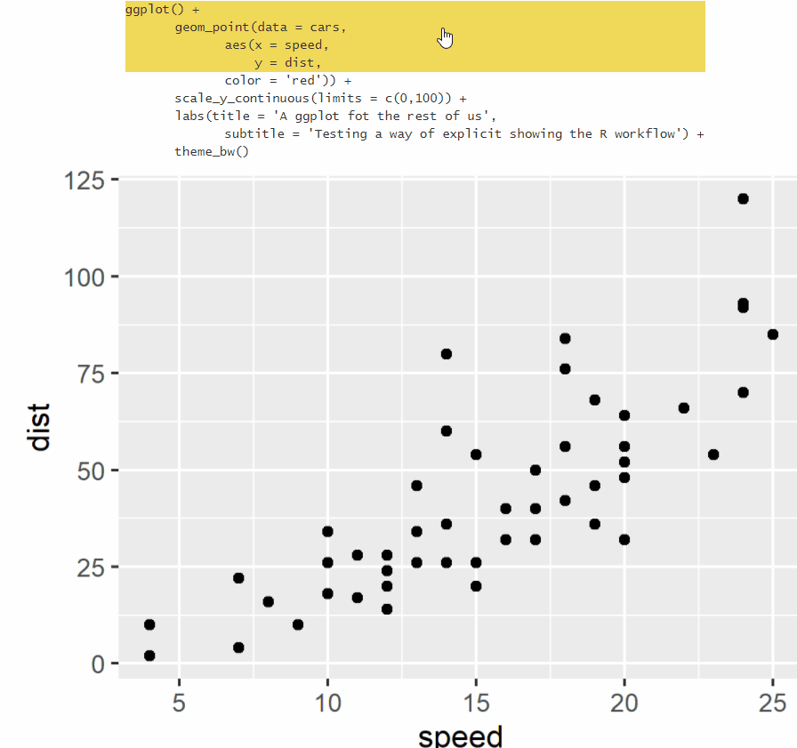
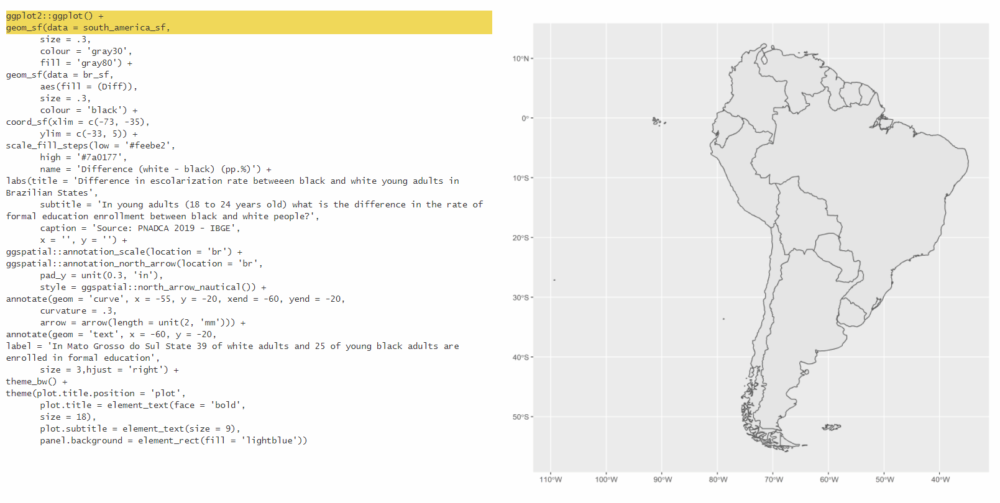

codehover creates interactive HTML tables where each row is a step of code and hovering a row shows the corresponding image. It is an educational tool: a fast way of showing what each line of a ggplot (or any pipe-like code) actually does.

Animation: hovering each row of a ggplot code table shows the plot as it looks up to that line
See a live HTML version here.
Installation
You can install codehover from github:
install.packages("devtools")
devtools::install_github("arthurwelle/codehover")Quick start: automatic mode
Since version 1.0.0 you no longer need to save each image by hand, nor set up any CSS/JavaScript. Give ch_hover() your ggplot code and it does the rest: the code is split at every top-level +, each partial plot is rendered to an image, and the result is a self-contained HTML object that works in R Markdown, Quarto and the RStudio viewer.
library(ggplot2)
library(codehover)
ch_hover({
ggplot(mtcars, aes(x = wt, y = mpg)) +
geom_point(color = "red") +
scale_y_continuous(limits = c(0, 40)) +
labs(title = "A ggplot for the rest of us") +
theme_bw()
})That single call replaces the whole manual workflow of v1 (saving six images with ggsave(), writing six ch_row() calls with hand-made pseudo-code, and wiring CSS and JavaScript through an R Markdown template).
Options worth knowing
ch_hover({ ... },
type = "incremental", # or "one_row": highlight only the hovered row
layout = "auto", # image beside the code when there is room,
# below it otherwise. "row" forces side by side
# (image shrinks if needed); "column" forces
# the image below the code
fixed_scales = FALSE, # TRUE pins axes/legends from the final plot,
# so the image does not "jump" between steps
width = 7, height = 5, # image size in inches
dpi = 96,
path = NULL, # default: images embedded as base64 and deleted.
# give a folder ("assets/") to keep the PNGs on
# disk and reference them by path (smaller HTML)
alt = NULL, # alt text: one string per step, or one for all.
# default builds "Plot after step i of n: <code>"
caption = NULL, # caption shown under the image
initial = "last" # image shown before any interaction:
) # "last", "first" or a step numberBy default each step shows the true output of its partial code, so axes and legends may change as layers are added — pedagogically honest. Use fixed_scales = TRUE for a visually stable reveal (this mechanism is borrowed from the excellent ggreveal package by Weverthon Machado).
Not only hover
Rows react to mouse hover, to tap on phones and tablets, and to the keyboard: Tab moves into the table, Arrow Up/Down walks the steps, Enter/Space activates one. Every image carries alternative text.
Theming
The stylesheet is scoped under .codehover and exposes CSS custom properties, so you can restyle it without fighting specificity:
.codehover {
--codehover-highlight: #cde7ff; /* row highlight */
--codehover-font: monospace; /* code font */
--codehover-font-size: 0.9em;
--codehover-tab: 2em; /* width of one indent level */
}A dark-scheme default is applied automatically through prefers-color-scheme.
Manual mode (low-level API)
The original building blocks are still exported, and they remain the way to go when your steps are not a single ggplot + chain: data-wrangling pipelines, maps built from several objects, any sequence of images with any pseudo-code.
You build the table by piping three functions — ch_int() starts it, ch_row() adds one row linked to one image, ch_out() closes it:
library(magrittr)
result <- ch_int(type = "incremental") %>%
ch_row(text = "ggplot() + <br> <tab1> geom_point(data = cars, aes(speed, dist)) </tab1>",
img = "./IMG/1.png") %>%
ch_row(text = "<tab1> scale_y_continuous(limits = c(0,100)) + </tab1>",
img = "./IMG/2.png") %>%
ch_row(text = "<tab1> theme_bw() </tab1>",
img = "./IMG/3.png") %>%
ch_out(img = "./IMG/3.png")
resultSince v1.0.0 ch_out() already returns a renderable object with the CSS and JavaScript attached — you no longer pass it through htmltools::HTML(), and no template is needed.
Inside text you can use <br> for line breaks, / /  for spaces, and <span class="ch-tab1"> … <span class="ch-tab16"> for indentation levels (the bare <tab1> … <tab16> tags used by earlier versions are still styled, so old documents keep working). ch_row(alt =) sets the alternative text announced when that row is active. By default images are embedded into the HTML as base64 (self-contained single file); pass url = TRUE to reference images hosted elsewhere.
An example with maps

Animation: a map built step by step, each row of code showing the corresponding layer
See the HTML version here.
What changed in 1.0.0
- New:
ch_hover()andch_hover_chunk()— automatic splitting, rendering and assembling, now the main entry point. - Output is self-contained: CSS and vanilla JavaScript travel with the HTML object (
htmltoolsdependency). No more templates, YAML wiring, or jQuery/CDN. -
ch_out()returns the finished, renderable object directly (do not wrap it inhtmltools::HTML()anymore). - Rows now use the valid HTML5
data-linkattribute (also fixes Quarto reveal.js usage); the fixedid='img_holder'is gone, so several tables can live on one page. - Removed: the flipbookr-based functions (
chunk_code_hover()etc.) and the flipbookr dependency.ch_hover()replaces them with no private-API usage and no#<<markers.
Credits
I began this package without knowing about the similar (and more sophisticated) flipbookr by Gina Reynolds, based on Xaringan — it was probably in my subconscious all along. codehover v1’s automatic mode was built on flipbookr internals; v2 has its own splitter but the idea remains hers. The fixed_scales mechanism comes from ggreveal by Weverthon Machado.
The codehover hex sticker was made using the R package hexSticker.